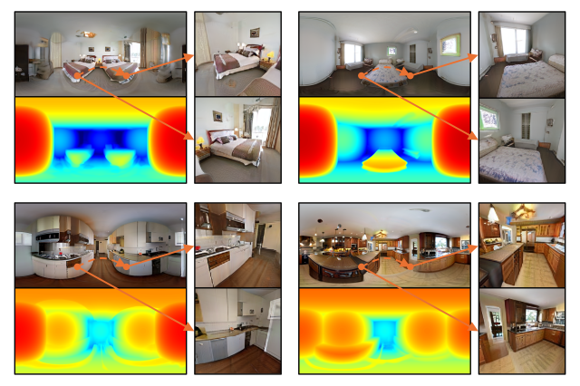
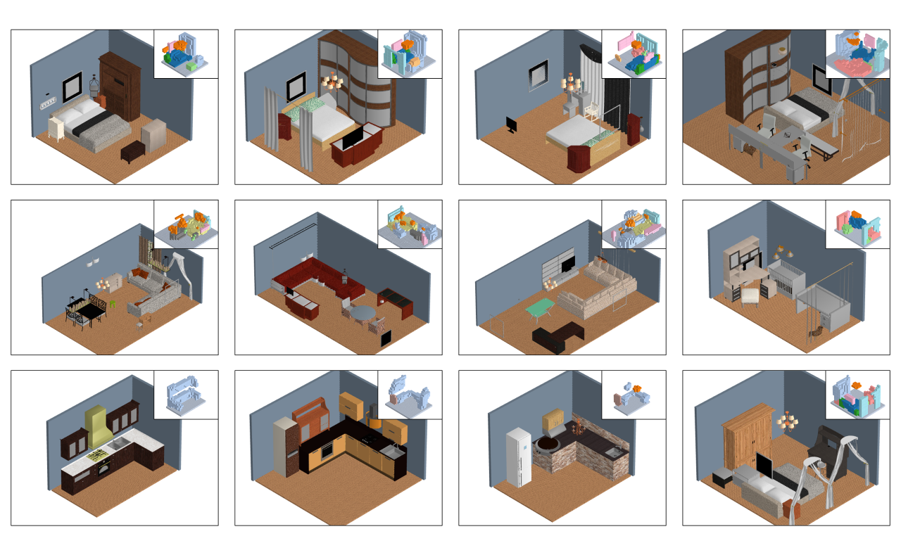

|
Ming-Jia Yang (杨明佳)
Ph.D. candidate
|
|

|
LPA3D: 3D Room-Level Scene Generation from In-the-Wild Images
Ming-Jia Yang, Yu-Xiao Guo, Yang Liu, Bin Zhou and Xin Tong Computational Visual Media Journal (CVMJ), 2025 [Project page] [Paper] |
|

|
Indoor Scene Generation from a Collection of Semantic-Segmented Depth Images
Ming-Jia Yang, Yu-Xiao Guo, Bin Zhou and Xin Tong Proceedings of the IEEE/CVF International Conference on Computer Vision (ICCV), 2021 [Paper] [Code] |